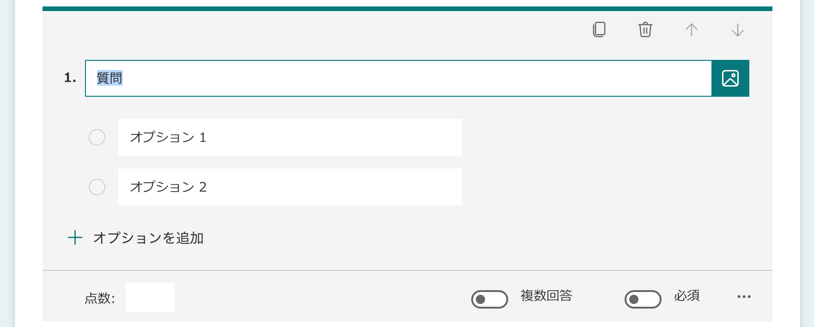
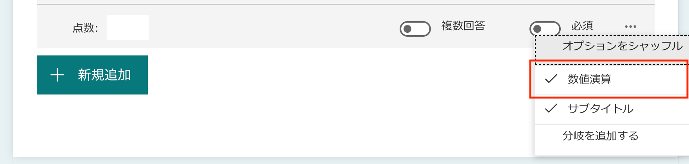

（令和3年2月2日 作成）
Forms：数学のクイズを作成する
- Microsoft 365 にアクセスし，ログインする．
- Microsoft Forms のページに移る．

- 「＋新しいクイズ」をクリックする．
- クイズの作成ページが現れる．「無題クイズ」のあたりをクリックすると，クイズのタイトルと説明が入力可能となる．
- 「新規作成」とクリックすると，設問を追加することができる．
- 選択肢：多肢選択式の設問
- テキスト：記述式（テキスト入力）の設問
- 評価：1〜5の★で評価する設問
- 日付：日付を答えさせる設問 ※カレンダーから日付が選択できる．
- ランキング：複数の項目を並び替えさせる設問
- リッカート：複数の設問に対する段階評価を尋ねる設問
- ファイルのアップロード
- Net Promoter Score：どの程度勧めるかを尋ねる設問
- セクション：設問をページごとに分ける場合に使う．※設問ページの最後が［次へ］になる．
「選択肢」を選択した場合の画面 - 数式を入力する方法
入力領域右下の「・・・」クリックし，「数値演算」を選択すると，サブタイトルや選択肢が数式表示となり，LaTeX形式や数式パレットによる数式入力が可能となる．

数式入力が可能となった問題入力画面 
数式パレット ※入力欄右の［T］をクリックすると通常のテキスト入力に戻る． - 複雑な数式の場合は，問題文（または解答選択肢も含む）を画像ファイルとして作成し，質問入力欄右の［メディアの挿入］をクリックし，画像を挿入する．
メディアの挿入 ※入力欄右端にカーソルをもっていくと，アイコンが現れる．
例１）テキスト入力欄に問題を記述し，数式部分を画像で挿入
例２）問題文自体を画像で挿入
例３）解答選択肢も画像で挿入 - 問題の得点（配点）の入力と正答の指定を忘れずに（複数選択可能な問題や，必答問題の設定も可能）．